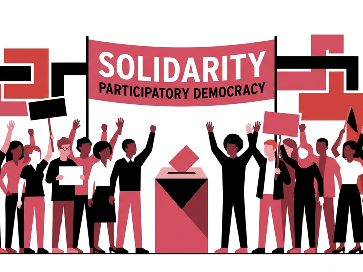
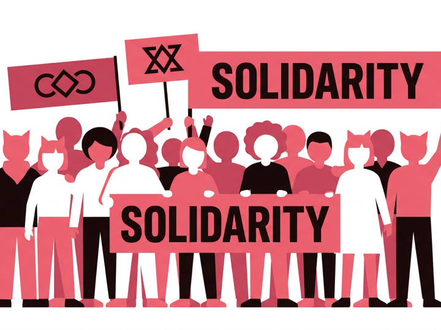
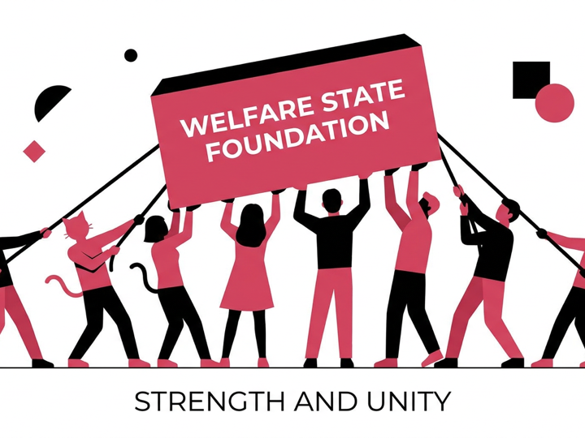
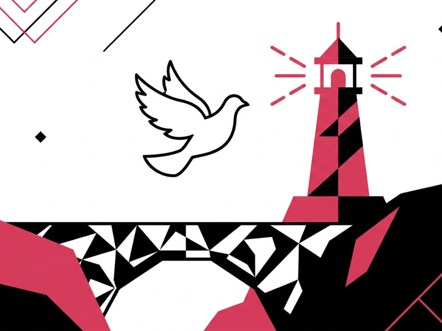

We don\'t just talk about progress - we organize for it. The Social Democratic Alliance brings together citizens from every corner of Caprica to fight for a society rooted in human dignity, equality, and unyielding solidarity.
We refuse to compromise on what matters most. Our movement is anchored in solidarity, liberty, tolerance, social justice, and equality. We envision a Caprica where democracy isn\'t just a vote every few years, but a participatory system where the masses hold true power.

Caprica\'s strength lies in its people. We celebrate a multi-ethnic society where diversity is our greatest asset. While Alanian unites us, we will fiercely protect the indigenous, Gallic, Alcamerian, and Ralandic languages that form the irreplaceable cultural fabric of our nation.

A civilized society guarantees dignity for all. We will relentlessly expand public healthcare, education, and social security. The working masses build Caprica\'s wealth, and under our government, they will finally reap the full rewards of their labor through deep, structural economic reform.

Our fight for justice does not end at our borders. In partnership with the Forward Parliamentary Group in the Columbian Union, we stand in unshakeable solidarity with democratic movements worldwide, advocating for an international order built on mutual respect and lasting peace.

Our vision extends far beyond these four pillars. The SDA Constitution comprehensively addresses our internal structures, including our powerful grassroots Branches, the Social Democratic Youth wing, the SDAqueer LGBTQIA+ wing, and our close, formal cooperation with affiliated labour unions.
Download Constitution (PDF)Discover the men and women standing for their communities to make this platform a reality.
Meet Our Candidates